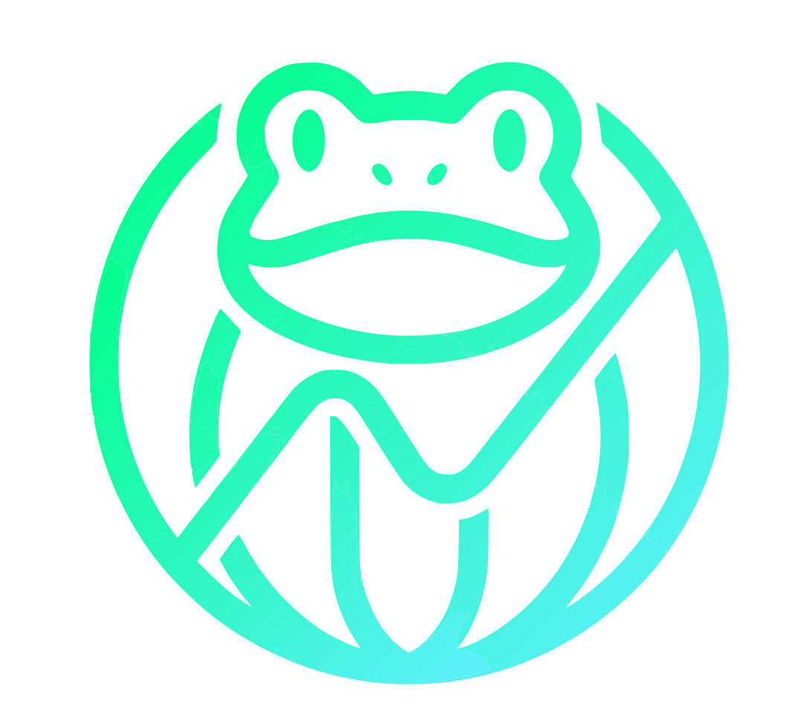

FROGLM
froglm.comFair Ranking Of Generative Language Models
Browse, filter and rank AI language models. Top picks by size tier, best value per token, best for self-hosting. Live data from artificialanalysis.ai.
Network & Systems Administrator · Palma, Spain
I design and run networks and systems for enterprise clients. Off the clock I build Proxmox homelabs and AI-powered tools.
My approach is practical: I choose the best tool for each challenge. I enjoy designing robust networks with MikroTik, implementing perimeter security with FortiGate and deploying high-capacity wireless solutions with Ubiquiti.
My passion for technology extends to my hobbies: I run a homelab and build side projects, which you can see under Projects.

Fair Ranking Of Generative Language Models
Browse, filter and rank AI language models. Top picks by size tier, best value per token, best for self-hosting. Live data from artificialanalysis.ai.
Daily tech news, written and voiced by AI (in Spanish)
A fully automated tech podcast: every weekday at 7:00 (Madrid) an AI reads the news, writes a humorous script, voices it and draws the cover.
A lofi pixel-art scene generated in the browser
My room facing the sea in Can Picafort, with synthesized lofi radio (8 tracks plus endless radio, no samples or streams), ambient sounds, Can Picafort's live weather and the sun and moon at their real times. TARS and the other characters follow their routines throughout the day.
My networking and virtualization lab
Where I test and learn off the clock: a Proxmox server hosting autonomous AI agents (Hermes and OpenClaw) for myself and others, each in its own VM or container. Third-party agents are isolated from my network.
Virtualization and VM management in Proxmox and VMware. Design and implementation of robust, secure network solutions for enterprise clients.
Leadership in network service delivery and management of critical infrastructure projects for corporate clients.
Network service delivery and specialized technical support for telecommunications infrastructure.
Network monitoring and maintenance: Ethernet, CCTV, IPTV, VoIP and Wireless. L2 troubleshooting in multi-vendor environments. Cisco & Huawei WLC administration, switching configuration and core network operations with Cisco and MikroTik.
Configuration and management of virtual servers (VMware, Hyper-V), Raspberry Pi, RouterOS (Mikrotik). Video surveillance implementation, Ubiquiti Unifi AP controllers, 3CX systems. OpenVPN network centralization with Mikrotik equipment.
core specialty
Privileged Remote Access
HCIA Access
Got a project in mind or want to talk networking and systems? Drop me a line.
rogert@rjgu.es